Intro to 3-Axis CNC
What is CNC?
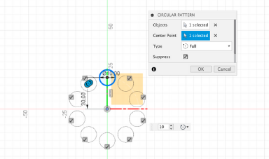
Circular Pattern
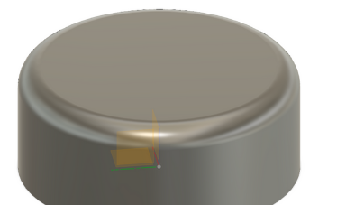
Fillet Tool
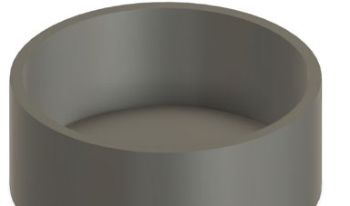
Shell Tool
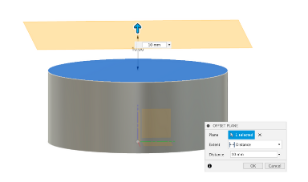
Horizontal Offset Plane
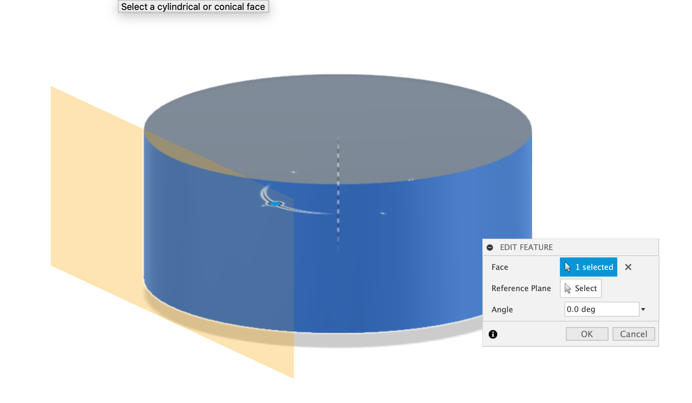
Tangential Offset Plane
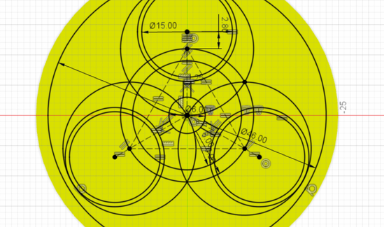
Fully Defined Sketch
Making a Vase in Fusion 360
Making the vase itself was a very simple task to do. Started off by making an initial base circle then adding a second circle near the edge. The trim tool was then used to cut the circle to the intescetion point wioth the larger cirle. The circular pattern tool was then used to repeat the trimmed circle arround the large base circle. Following then the design was extruded upwards. This was then saves as an STL to be used in prusa slicer to turn into vase mode. Continuing on Fusion 360 though I then shelled the vase clicking on the top profile to hollow out the vase and remove the top. Then I filleted the top edge to smooth it out, making the final vase.
Making the vase itself was a very simple task to do. Started off by making an initial base circle then adding a second circle near the edge. The trim tool was then used to cut the circle to the intescetion point wioth the larger cirle. The circular pattern tool was then used to repeat the trimmed circle arround the large base circle. Following then the design was extruded upwards. This was then saves as an STL to be used in prusa slicer to turn into vase mode. Continuing on Fusion 360 though I then shelled the vase clicking on the top profile to hollow out the vase and remove the top. Then I filleted the top edge to smooth it out, making the final vase.
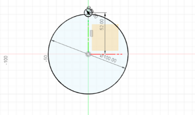
Using VS Code as my choice of IDE
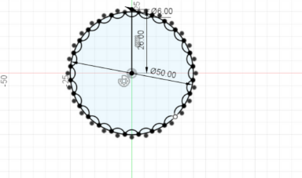
Cloning Repository from GitHub
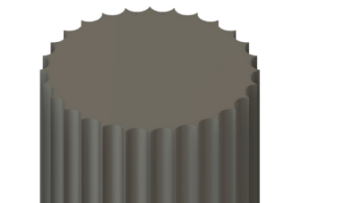
Extruding the Vase
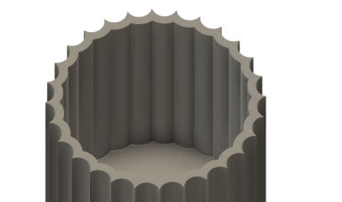
Shell Tool
 Fillet Tool
Fillet Tool
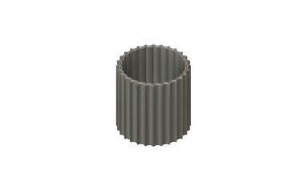
Completed Vase
Vase Mode in Prusa Slicer
Taking the file exported from Fusion 360 was then imported into Prusa Slicer. No supports or brim is needed fro the print, and prusa Slicer and Fusion both work in mm, so no values have to be changed when importing. That means all that was left to do was activate vase mode, slice the model, export the gCode and print it. I did this with ocotoprint since I was lazy and did not want to get off the couch.
Taking the file exported from Fusion 360 was then imported into Prusa Slicer. No supports or brim is needed fro the print, and prusa Slicer and Fusion both work in mm, so no values have to be changed when importing. That means all that was left to do was activate vase mode, slice the model, export the gCode and print it. I did this with ocotoprint since I was lazy and did not want to get off the couch.
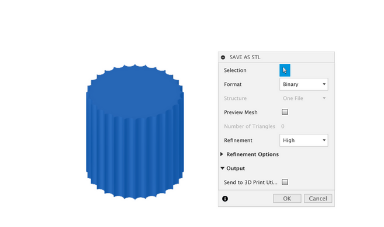
Exporting from Fusion 360
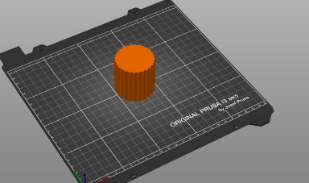
Importing into Prusa Slicer
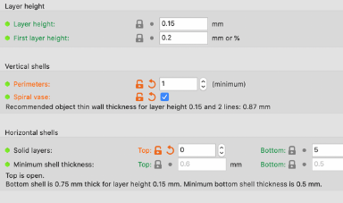
Vase Mode Prusa Slicer
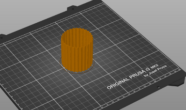
Sliced Vase in Prusa Slicer
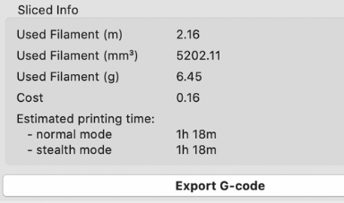
Exporting Print from Slicer
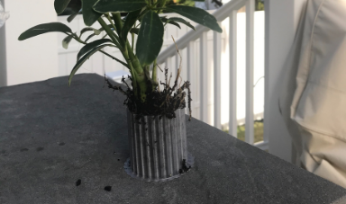
Completed and Printed Vase
Making a Watering Can
To make the watering can various different tools had to be used. Starting off an initial base was made and extruded to make the container portion of the watering can. Following that a tangetial plane was made to the cylinder, and a following offset plane at an angle was then made using that tangential plane. Using the plane at an agnle the spot, a circle, was extruded in both directions both towards and away from the can to make the spout. A parralel offset plane to the spout was then made for the rose. The spout was then loftwed to another profile on the roses plane to make the rose. The whole thing was then shelled, and then using circular pattern tool holes for the rose for the water to come out of were made. Finally the edge was filleted, and then the watering can was complete.
To make the watering can various different tools had to be used. Starting off an initial base was made and extruded to make the container portion of the watering can. Following that a tangetial plane was made to the cylinder, and a following offset plane at an angle was then made using that tangential plane. Using the plane at an agnle the spot, a circle, was extruded in both directions both towards and away from the can to make the spout. A parralel offset plane to the spout was then made for the rose. The spout was then loftwed to another profile on the roses plane to make the rose. The whole thing was then shelled, and then using circular pattern tool holes for the rose for the water to come out of were made. Finally the edge was filleted, and then the watering can was complete.
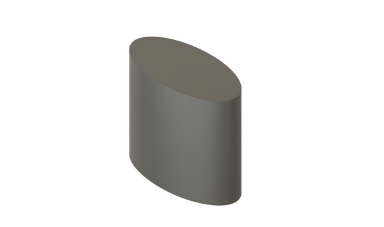
Container Portion of watering Can
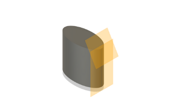
Making Offset Plant for Spout
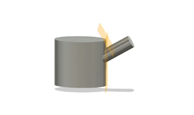
Used Template for Portfolio Page
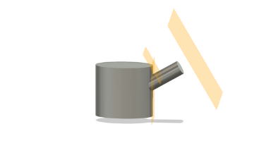
Rose offset Plane
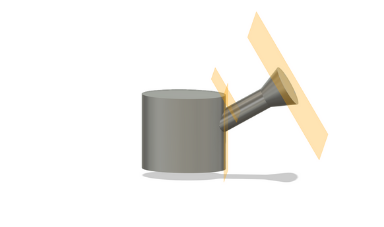
Loft Tool to Make Rose
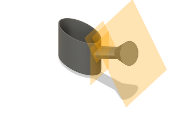
Shell the Watering Can
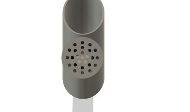
Rose Circular Pattern Tool
Fillet Watering Can
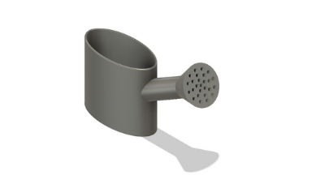
Finished Watering Can